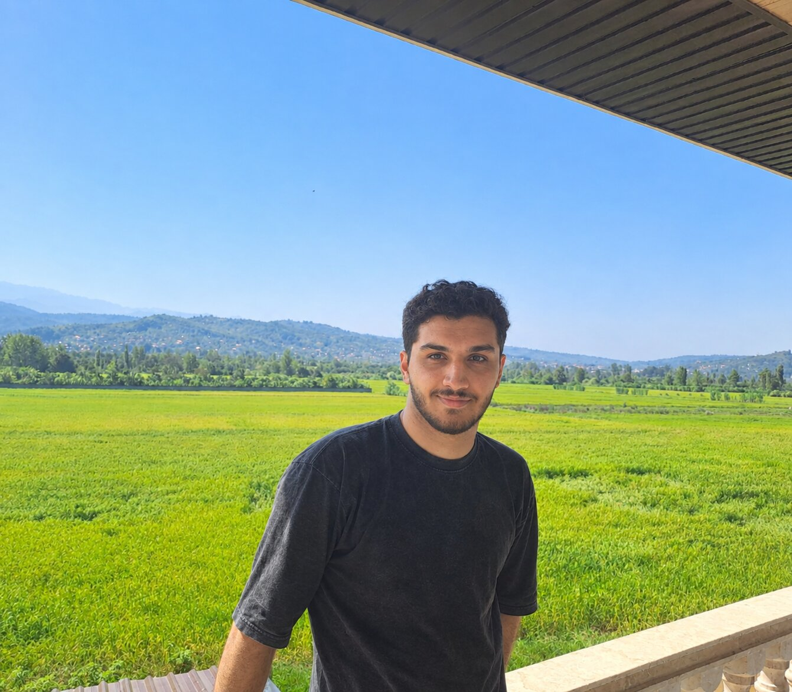
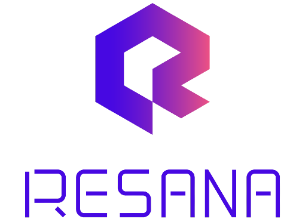
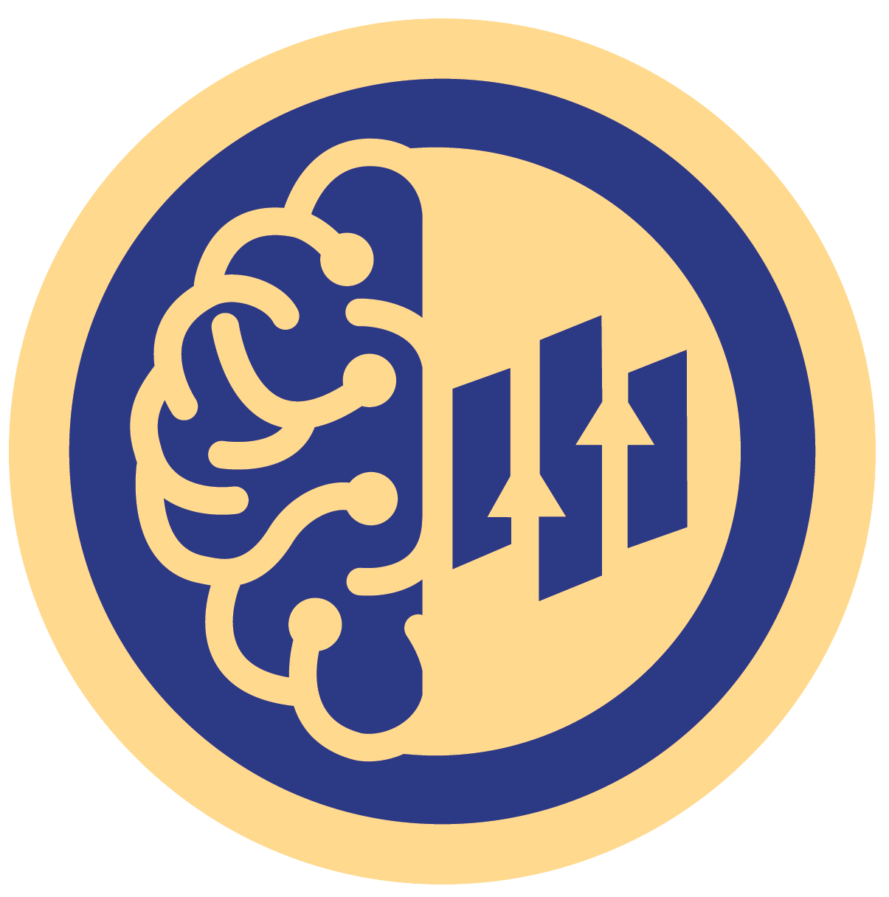
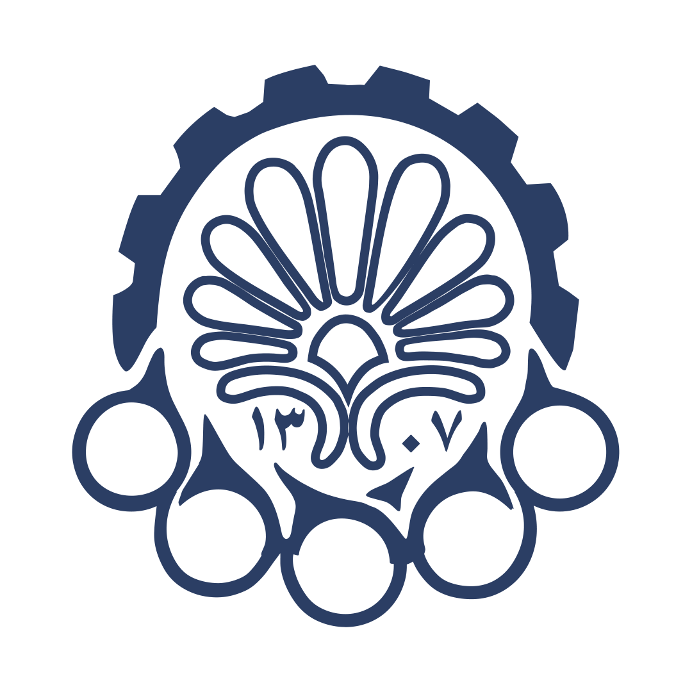

Ilya Khalafi
Over the past decade I have built a strong foundation in software engineering, with an increasing focus on deep learning and large-scale AI systems throughout my undergraduate studies. Today I specialize in architecting reliable data pipelines, developing production-ready AI systems, and building backend services for intelligent analytics platforms — with particular emphasis on large language model applications, and on bridging research and production through robust, scalable ML pipelines.
About
What I do
I build and ship LLM systems end to end: retrieval over millions of chunks with hybrid vector and keyword search, knowledge-graph extraction, agentic workflows over heterogeneous enterprise data, and post-training of open-weight models on multi-GPU clusters — with the data pipelines, backends, and observability that keep them running in production.
Focus areas
Based in Tehran, Iran — open to remote and relocation.
Professional Experience

Show details
- Achieved a score of 80% on an in-house agent built for a Japanese partner company, retrieving facts from 1.5M+ chunks using knowledge graphs, Qdrant hybrid search, Elasticsearch keyword search, and other tools.
- Scored 96% for another client by converting chart- and table-heavy documents into SQL tables and Qdrant hybrid indexes, answering time-interval questions with a Qwen3.6-35B model on DGX Spark hardware.
- Currently fine-tuning Qwen3.6-35B with SFT + LiPO + GSPO using the verl library on a cluster of 8× H200 GPUs for that agent.
- Implemented a synthetic data generation pipeline spanning simple conversational, internal security, hallucination-check, SQL, and search-grounded categories with k rollouts for SFT/LiPO; SFT phase stable with MiCA initialization, testing LiPO before DAPO/GSPO.

Worked on OneMan-AI, a business intelligence AI agent for analyzing heterogeneous, islanded databases and files across enterprise environments.
Show details
- Implemented MCP tools on top of Trino to integrate multiple data sources — from SQL and NoSQL databases to Excel files — through a unified query layer for the AI agent.
- Built highly efficient workflows for ingesting structured and unstructured files, and deployed the data engineering pipeline with Hatchet for production file-processing workflows.
- Developed the agent's schema exploration and intent recognition capabilities, plus key agentic workflow and backend components.
- Deployed and maintained platform services including GitLab, GitLab Runner, Langfuse, and Portainer, with CI/CD pipelines for all microservices.
- Implemented most of the backend services with Django and the web UI with Next.js for end-to-end delivery of the analytics platform.
Show details
- Improved pipeline throughput 2× by designing batching and asynchronous I/O operations for large-scale document processing.
- Achieved near-linear CPU scaling with a fault-tolerant multi-process architecture handling a 200K+ document corpus efficiently.
- Constructed asynchronous pipelines for ontology and knowledge graph extraction with page-level reference integrity.
- Engineered the asynchronous AI agent core on LangChain / LangGraph with efficient memory management and evaluation hooks.
- Conducted comprehensive benchmarking of vector database search relevance and latency for enterprise use cases.
- Enhanced agent observability with Langfuse-based multi-metric tracing and automated performance dashboards.
Education
Current CGPA 19.92 / 20.
Supervisor: Dr. Hadi Veisi.

CGPA 19.17 / 20.
Thesis: Adversarial Learning of Audio-Based Animated 3D Facial Expressions from Online Videos.
National Organization for Development of Exceptional Talents.
Honors & Awards
Rank #4 Student
Sep 2020 – Aug 2024 · Amirkabir University of TechnologyRanked #4 among all Computer Science undergraduates with a CGPA of 19.17/20, and held the #1 ranking for 4 out of 8 semesters.
Silver Medal
2017 · Ibn Haitham Robotics CompetitionSecond place in the Road Smoothing Robots category at the national robotics competition.
Selected Projects
Adversarial Learning for 3D Facial Animation
Feb – Aug 2024Bachelor's thesis. Real-time pipeline extracting 3D facial models from VoxCeleb frames using MediaPipe, triangulation, and Kalman filtering, visualized with Open3D, training FaceFormer in an adversarial setup.
PPO Agent for Multi-Agent Competition
Jun – Aug 2022Isfahan University of Technology AI Cup 2022. PPO agent built with RLlib and TensorFlow for a competitive, partially observable multi-agent environment.
UniLand Archive Bot
Dec 2022 – Jan 2023Software engineering course project. Telegram bot serving 1,000+ users with 5,000+ searches using asynchronous database queries.
Optimized Course Planner
May 2022Linear programming course project. Course-plan optimizer built on linear optimization and the Simplex algorithm.
Let's build something
Open to research collaborations and research positions in AI systems, LLMs, and data infrastructure.